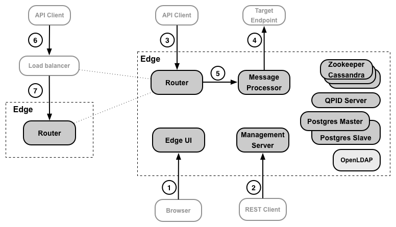

[toc]
The following figure shows where Apigee Edge for Private Cloud customers configure TLS:

The following table describes the locations where you configure TLS access for a Private Cloud installation:
|
Source |
Destination |
TLS Access |
|
|---|---|---|---|
|
1 |
API developer |
Edge management UI |
Enable TLS on the Edge management UI. See the Edge Operations Guide for more, which is available from your private FTP account or on the Apigee Support Portal under Libraries (Edge for Private Cloud version 4.16.01 and earlier) and online at http://docs.apigee.com/node/20491 (version 4.16.05 and later). |
|
2 |
API Developer |
Edge management API |
Enable TLS on the Edge management API. See the Edge Operations Guide for more, which is available from your private FTP account or on the Apigee Support Portal under Libraries (Edge for Private Cloud version 4.16.01 and earlier) and online at http://docs.apigee.com/node/20491 (version 4.16.05 and later). |
|
3 |
API Client (app) |
API |
Enable TLS on API access through the use of virtual hosts on the Edge Router. See http://docs.apigee.com/node/18086 for more. |
|
4 |
Edge |
Target endpoint |
Enable TLS between Edge and a backend service provider. See http://docs.apigee.com/node/18091 for more. |
|
5 |
Router |
Message Processor |
Enable TLS for communication between a Router and Message Processor. See the Edge Operations Guide for more, which is available from your private FTP account or on the Apigee Support Portal under Libraries (Edge for Private Cloud version 4.16.01 and earlier) and online at http://docs.apigee.com/node/20491 (version 4.16.05 and later).. |
If your Edge for Private Cloud installation included a load balancer, then you might also have to replace the configuration for #3 above to configure TLS between the app and load balancer, and between the load balancer and the Edge Router:
|
Source |
Destination |
Description |
|
|---|---|---|---|
|
6 |
App |
Load Balancer |
Enable TLS on the load balancer. This process is determined by your load balancer. |
|
7 |
Load Balancer |
Router |
If necessary, enable TLS on the Router for requests from the load balancer. Use the same process as you do for configuring TLS for a virtual host as described here: http://docs.apigee.com/node/18086. If the load balancer and Router are in the same security domain, TLS configuration may not be necessary. However, that is dependent on your network configuration. |
Learn more:
The following image shows the places where API BaaS uses TLS:
See http://docs.apigee.com/node/21941 for more information.